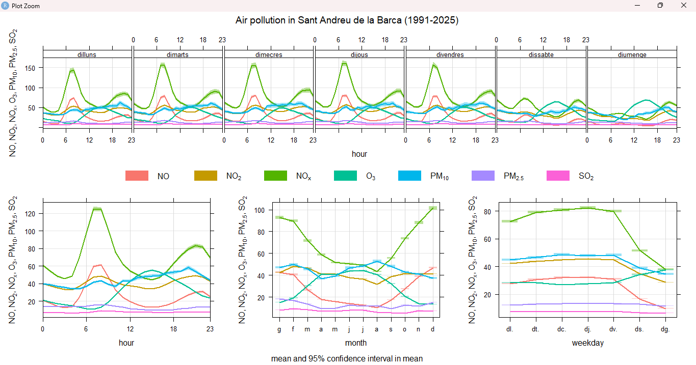
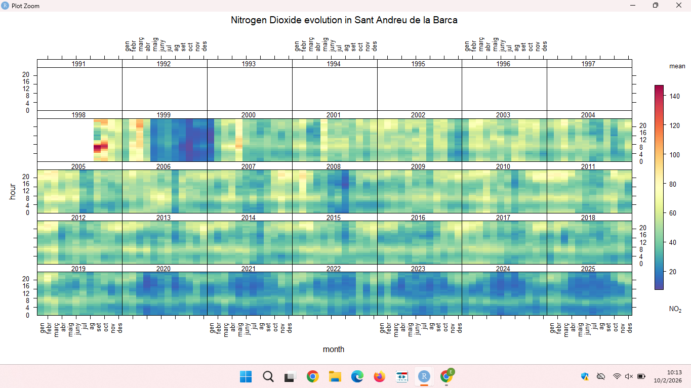
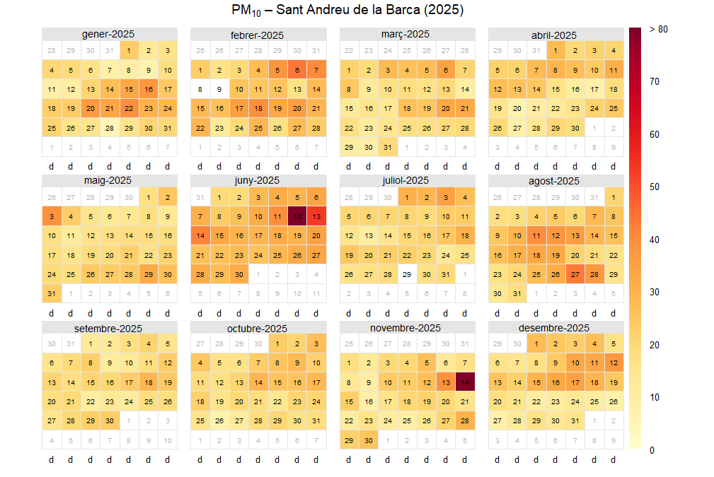
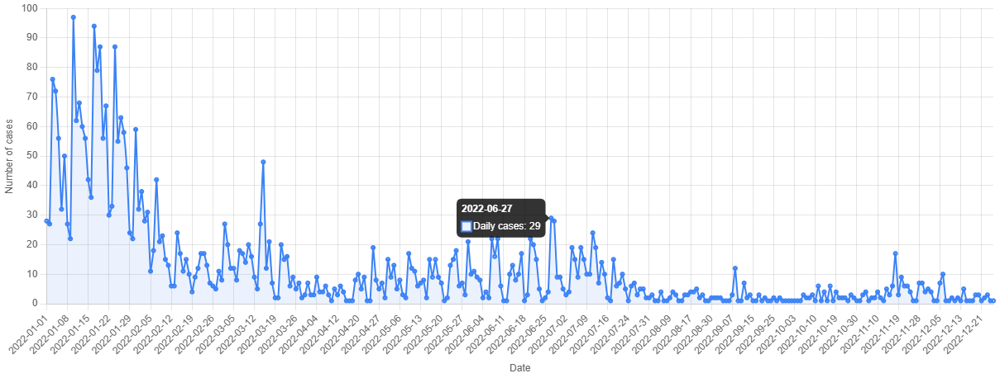
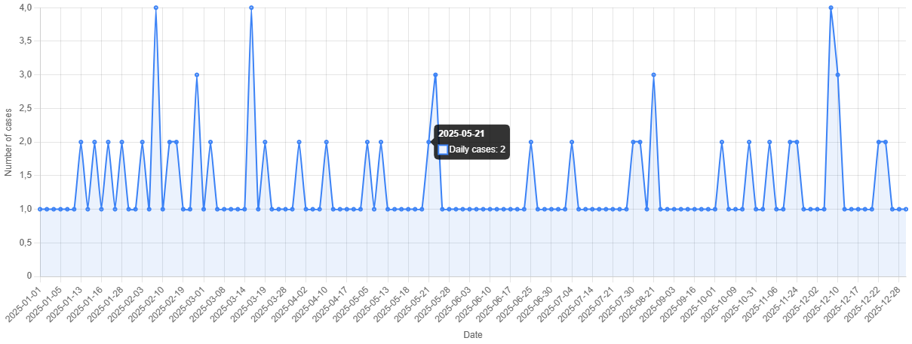
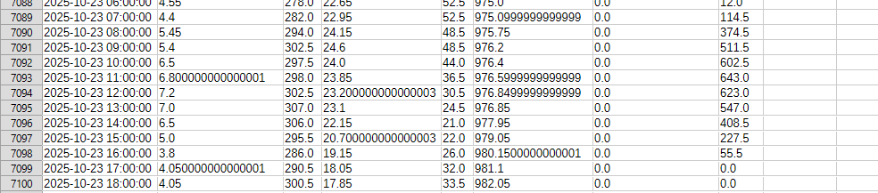
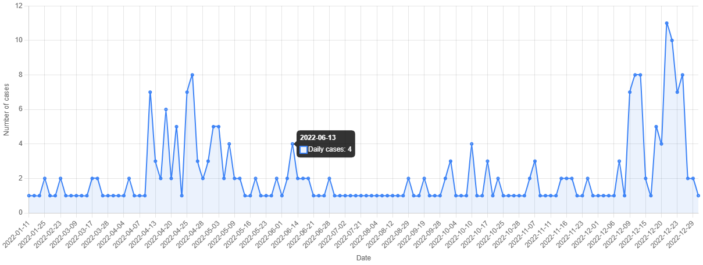
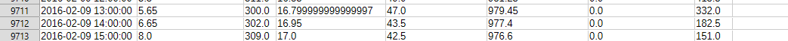

Air pollution, meteorological conditions and respiratory infections in Baix Llobregat. A 14-year spatiotemporal analysis.
The objectives of this research project are:
- Eric Moreno Escutia & Abdul Rafia Malik Iqbal are studying all data from Sant Andreu de la Barca that is a city located in Baix Llobregat county. In this county we are using data from Air Pollution Prevention and Monitoring Network(XPVCA in catalan) corresponding to hourly data of air pollutants from year 1991 to 2025. Data included: nitrogen oxide (NO), nitrogen dioxide (NO2), nitrogen oxides (NOX), ozone (O3), particulate matter of less than 10 µg/m3(PM10), particulate matter of less than 2.5 µg/m3(PM2.5) and sulphur dioxide (SO2)
- Meteorological data is not available from Meteocat XEMA (Meteorological data server of Catalonia) , so we choose the nearest meteorological station that is Vallirana. The data structure is based on semi-hourly data that is, data every 30 minutes from 2009. Data included: temperature, relative humidity, pressure, wind direction, wind speed and solar irradiance.
- Respiratory infection data are collected from Catalonia Information System for Infection Surveillance (SIVIC) using data from region 75, that is Barcelona Metropolitan south region, and 201 is the identificator of the Primary care centre from Sant Andreu de la Barca. And we want to compare the respiratory infections with air pollution, and that we have done it with RStudio . RStudio is an integrated development environment (IDE) used to write, run, and manage code in the R programming language, mainly for data analysis, statistics, and visualization. Now, let's see the graphics that RStudio has given.

This is the first graphic, and is called 'Time Variation'
This graphic shows how air pollutants vary in Sant Andreu de la Barca depending on the hour of the day, the month of the year, and the day of the weekend. The pollutants analyzed are nitrogen oxide, nitrogen dioxide, nitrogen oxides, ozone, particulate matter of les than 10 µg/m3,particulate matter of les than 2.5 µg/m3 and sulphur dioxide. We see, that the pollutant NOX is higher than the rest of the pollutants. It might be because of the traffic. In that certain hour of the day there could be a higher number of vehicles on the road and because of that there are higher emissions of pollutants such as NOX.

This is the second graphic, named 'Trend Level'
In the title, we can see that it says 'Nitrogen Dioxide evolution in Sant Andreu de la Barca', that means the evolution of nitrogen dioxide in the air in Sant Andreu de la Barca from the year 1991 to 2025. The graphic shows the months of the year, that each rectangular corresponds to one year and that the data starts from the 1998 to 2025. The color bar on the right shows the NO2 concentration, and we see 5 different type of colors. The blue, means it has very low concentration, the green it means that it has low concentration, the yellow it means that have medium concentration, the orange, high concentration and the red, it has a very high concentration. We can see that in the earlier years, the 1998 and the beginning of the 2000, there was more yellow and even red areas, indicating that there higher pollution levels. And in the recent years, from the 2020 to 2025, there are more blue areas, suggesting lower NO2 concentrations. This indicates that the air quality, over time, has improved a lot.
This is the third graphic, titled 'Calendar Plot'.
The title is 'PM10 - Sant Andreu de la Barca (2025)'. The graphic shows all the days and months of 2025 in Sant Andreu de la Barca, and the differents colors shows the concentration of PM10 in that day. In the right we see a bar, with differents colors (yellow, orange, red and dark red) and in some days we see white, and it means that we don't have data from that day. What data shows is that most of the days are moderate pollution levels, and fortunately, there are only a fewpollution peaks during the year. For example, in June 12-13 there are very high levels of pollution, in November 14, there are a high peak again, and we can see in February, August and December there are several days that are a bit higher than the average. This peaks it can be from the traffic emissions or other factors.
-
Now, we want to know if it complies with the law.
European law states that the maximum number of times that 200 micrograms per cubic meter of nitrogen dioxide can be exceeded in a year is 18.
We have observed that it gives us 16 exceedances in 34 years (1991-2025).
16 exceedances of NO2 greater than 200 micrograms per cubic meter from 91 to 25 in Sant Andreu de la Barca.
We verify that in 2025 it gives 0. In 2025 0 exceedances.
According to European regulations, 18 passes per year are accepted.
16 years of pollution were exceeded in Sant Andreu de la Barca.
With the pollutant pm10, the maximum pollution level according to the law was exceeded for 1127 days from 1991 to 2025.
And now let's see the summary and conclusion that RStudio has given us.
It has also given us which is the most problematic pollutant and the most critical year:
➡ The pollutant no2 has failed to meet the annual limit in 18 of the 35 years analyzed ( 51.4 % of the period ).
- Total days exceeded: 0
- Total hours exceeded: 16
➡ The pollutant o3 has failed to meet the annual limit in 0 of the 35 years analyzed ( 0 % of the period ).
- Total days exceeded: 0
- Total hours exceeded: 260
➡ The pollutant pm10 has failed to meet the annual limit in 8 of the 35 years analyzed ( 22.9 % of the period ).
- Total days exceeded: 1127
- Total hours exceeded: 0
➡ The pollutant pm2.5 has failed to meet the annual limit in 4 of the 35 years analyzed ( 11.4 % of the period ).
- Total days exceeded: 48
- Total hours exceeded: 0
➡ The pollutant so2 has failed to meet the annual limit in 1 of the 35 years analyzed ( 2.9 % of the period ).
- Total days exceeded: 0
- Total hours exceeded: 0
⚠ The most problematic pollutant during the period 1991–2025 has been no2 with failure to meet the annual limit in 18 years.
📅 The most critical year of the period has been 2000 with 2 pollutants exceeding the annual limit.
📘 GENERAL CONCLUSION:
The analysis of air pollution in Sant Andreu de la Barca during the period 1991–2025
shows that air quality has presented recurrent failures to
European legal limits, especially for pollutants associated with traffic and
industrial activities.
Although a general trend towards improvement has been observed in recent years,
some pollutants continue to exceed recommended values, indicating
the need to maintain and strengthen emission reduction policies.
-
Now, we want to compare the meteorlogical data with Sivic.
COVID-19

Here is the graphic of COVID-19 from the Sivic of Sant Andreu de la Barca in the year 2022. The comparison between PM₁₀ data and the daily cases of respiratory infections from primary healthcare centers (SIVIC), in 2022 from COVID-19 shows that some episodes with higher particle concentrations of pollution coincide with small increases in the number of cases. This may indicate that poorer air quality can affect respiratory health.STREPTOCOCCAL PHARYNGOTONSILLITIS

This is the graphic of streptococcal pharyngotonsillitis, and then we have a photo of the meteorological in 2025 of Sant Andreu de la Barca.
-
In the meteo photo, we can see a lot of numbers.
In the first column it's the date and the time (when the measurament was taken), the second column is the temperature, the third, is the direction of the wind, the four it's the speed of the wind, the fifth column is the relative humidity, the sixth is the atmospheric pressure, the next one is the precipitation, and the last is the temperature.
In the Meteocat dataset, a peak meteorological value was recorded on 23 October 2025.
When comparing this date with the SIVIC respiratory infection data, a change in the number of reported cases can be observed around the same period.
This may suggest that certain meteorological conditions could influence respiratory health, like air pollution.
FLU

This is the stadistic of the flu in 2016.
-
In the meteorological dataset, a peak value is observed on 9 February 2016.
When comparing this period with the flu cases recorded in 2016, higher numbers of infections are visible.
This suggests that winter meteorological conditions can facilitate the spread of the flu, although the main cause of the disease is the flu itself.
CONCLUSION
Air pollution in Sant Andreu de la Barca shows daily and seasonal patterns, with higher levels during traffic hours and weekdays. Over the years, fortunately the NO₂ levels have generally decreased, indicating an improvement in air quality. When comparing these patterns with SIVIC respiratory infection data, some increases in cases occur during periods with less favorable environmental conditions. This suggests that air pollution and weather might influence in respiratory health, although infections are mainly caused by viruses or bacteria.